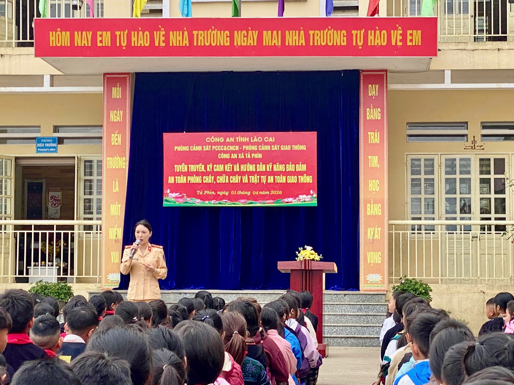
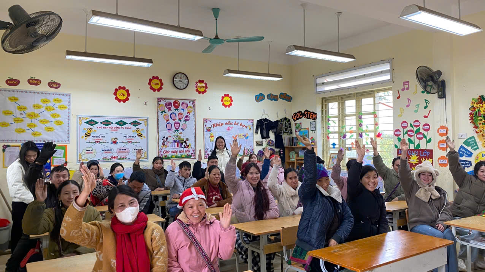

DÂN VẬN KHÉO – NHIỀU CÁNH TAY NỐI DÀI
VÌ HỌC SINH VÙNG CAO 🎓
Tại Trường Tiểu Học Tả Phìn
Y Tế Xã
Công An Xã
Giao Thông
Chính Quyền Địa Phương
Cha Mẹ Học Sinh
📌 Thông Điệp Nhân Văn
“Tại Trường Tiểu học Tả Phìn, xã Tả Phìn, tỉnh Lào Cai, chăm lo cho học sinh không chỉ là câu chuyện của những người đứng trên bục giảng. Từ cán bộ y tế, lực lượng công an, cán bộ tuyên truyền an toàn giao thông đến chính quyền địa phương và cha mẹ học sinh, mỗi lực lượng một phần việc, cùng tạo nên một môi trường học tập an toàn, lành mạnh. Những việc làm cụ thể ấy đang cho thấy một cách làm dân vận gần gũi: gần học sinh, gần phụ huynh, gần cộng đồng và cùng hướng đến mục tiêu nâng cao chất lượng giáo dục.”
01
Sợi Dây Liên Kết
Khi Nhà Trường Không Đi Một Mình
Mỗi ngày đến trường của một học sinh vùng cao là hành trình bắt đầu từ gia đình, đi qua cộng đồng và kết thúc ở lớp học. Vì thế, để các em học tập, rèn luyện và trưởng thành, những gì diễn ra trong lớp học thôi chưa đủ.
Ở Trường Tiểu học Tả Phìn, sự phối hợp giữa nhà trường với các lực lượng tại địa phương được thể hiện bằng những việc làm cụ thể, gắn trực tiếp với cuộc sống của học sinh.
Không phải những điều lớn lao, đó có thể là một buổi khám sức khỏe ngay tại trường; một buổi tuyên truyền để các em hiểu hơn về an toàn giao thông; những hướng dẫn về phòng cháy, chữa cháy và kỹ năng cứu nạn, cứu hộ; sự quan tâm, thăm hỏi của chính quyền địa phương hay những ngày cha mẹ học sinh cùng đến trường lao động.
✨ Mỗi hoạt động giải quyết một nhu cầu thiết thực. Nhưng khi đặt cạnh nhau, những việc làm ấy tạo thành một sợi dây liên kết giữa nhà trường – gia đình – chính quyền – các lực lượng xã hội và cộng đồng. Đó cũng là cách “Dân vận khéo” được cụ thể hóa từ những công việc gần gũi nhất.
02
Y Tế Học Đường
Chăm Lo Cho Học Sinh Từ Những Điều Thiết Thực
Một đứa trẻ muốn học tập tốt trước hết cần có sức khỏe tốt. Với học sinh tiểu học, việc theo dõi, chăm sóc sức khỏe không chỉ giúp phát hiện những vấn đề cần lưu ý mà còn góp phần hình thành cho các em ý thức quan tâm đến chính bản thân mình.
Tại Trường Tiểu học Tả Phìn, cán bộ y tế xã đã phối hợp với nhà trường thực hiện khám sức khỏe cho học sinh. Những chiếc bàn khám, những lượt học sinh được kiểm tra sức khỏe ngay tại trường có thể là hình ảnh rất đỗi bình thường. Nhưng phía sau đó là sự phối hợp giữa hai đơn vị cùng hướng tới một mục tiêu chung: chăm lo tốt hơn cho học sinh.
Trong công tác giáo dục, có những kết quả không thể đo bằng điểm số. Một học sinh khỏe mạnh, được quan tâm đúng lúc, được thầy cô và gia đình theo dõi, chăm sóc cũng là một điều kiện quan trọng để các em yên tâm học tập. Và để chăm lo cho các em một cách đầy đủ hơn, nhà trường cần đến sự đồng hành của cả cộng đồng.
[ẢNH 1] CÁN BỘ Y TẾ XÃ KHÁM SỨC KHỎE HỌC SINH
Cán bộ y tế xã phối hợp với Trường Tiểu học Tả Phìn khám sức khỏe cho học sinh. 452/452 em học sinh được khám sàng lọc sức khỏe ban đầu.
03
An Ninh & Kỹ Năng Sống
Cùng Xây Dựng Một Môi Trường Học Tập An Toàn
Một môi trường giáo dục tốt không chỉ cần tri thức mà còn phải an toàn. Từ phòng ngừa nguy cơ đến trang bị kỹ năng ứng phó, sự phối hợp với lực lượng công an giúp những kiến thức vốn tưởng như xa với học sinh trở nên gần gũi hơn thông qua những hoạt động trực tiếp tại trường.
Công tác kiểm tra, test ma túy theo kế hoạch đối với đội ngũ giáo viên là một hoạt động thể hiện sự quan tâm đến việc phòng ngừa nguy cơ, góp phần xây dựng môi trường giáo dục an toàn, lành mạnh.
[ẢNH 2] CÔNG AN XÃ TEST MA TÚY GIÁO VIÊN
Chú thích: Lực lượng Công an xã phối hợp thực hiện công tác kiểm tra, test ma túy đối với giáo viên tại nhà trường (Hoạt động theo kế hoạch Tháng an toàn phòng chống ma túy; kết quả: 100% cán bộ giáo viên gương mẫu, không ma túy).
Cũng với mục tiêu bảo đảm an toàn, cán bộ công an hướng dẫn nhà trường và học sinh về công tác phòng cháy, cứu nạn, cứu hộ. Những kiến thức về cách phòng ngừa cháy, cách xử lý khi có tình huống nguy hiểm hay kỹ năng thoát nạn sẽ chỉ thực sự có ý nghĩa khi được truyền đạt bằng những tình huống cụ thể, phù hợp với lứa tuổi.
[ẢNH 3] CÔNG AN HƯỚNG DẪN PCCC & CỨU NẠN
Chú thích: Cán bộ Công an hướng dẫn nhà trường và học sinh kiến thức, kỹ năng phòng cháy, cứu nạn, cứu hộ.
Từ phòng cháy đến phòng ngừa các nguy cơ khác, điều quan trọng không chỉ là “nói cho học sinh biết”, mà là giúp các em hình thành kỹ năng và ý thức tự bảo vệ mình. Đó là một cách giáo dục thiết thực, trong đó những người làm công tác chuyên môn bên ngoài nhà trường trở thành những người đồng hành cùng thầy cô trong việc bảo vệ học sinh.
04
Cổng Trường Bình Yên
Từ Cổng Trường Đến Những Con Đường An Toàn
Với học sinh, hành trình đến trường bắt đầu từ ngoài cánh cổng. Bởi vậy, giáo dục an toàn giao thông cũng là một phần không thể tách rời của việc chăm lo cho các em. Những buổi tuyên truyền về an toàn giao thông đưa các quy định, kỹ năng và những điều cần lưu ý khi tham gia giao thông đến gần hơn với học sinh.

[ẢNH 4] CÁN BỘ GIAO THÔNG TUYÊN TRUYỀN AN TOÀN GIAO THÔNG
Chú thích: Cán bộ giao thông tuyên truyền, hướng dẫn học sinh những kiến thức cần thiết khi tham gia giao thông.
Với trẻ nhỏ, những bài học ấy không chỉ nằm trên trang sách. Đó là cách đội mũ bảo hiểm đúng quy định, đi đúng phần đường, quan sát khi qua đường và biết tự bảo vệ mình trên hành trình đến trường. Khi cán bộ chuyên môn cùng nhà trường trực tiếp giáo dục học sinh, những kiến thức về an toàn trở nên gần gũi và dễ nhớ hơn.
Một lần tuyên truyền có thể chỉ diễn ra trong một khoảng thời gian ngắn. Nhưng nếu được nhắc lại thường xuyên, được gia đình đồng hành và được các em thực hành trong cuộc sống, những bài học ấy có thể trở thành thói quen.
05
Chung Một Trách Nhiệm
Khi Chính Quyền Và Nhà Trường Cùng Chung Một Trách Nhiệm
Nhà trường là nơi trực tiếp tổ chức dạy học, nhưng giáo dục học sinh luôn gắn với đời sống của địa phương. Sự quan tâm của chính quyền địa phương đối với nhà trường vì thế không chỉ mang ý nghĩa động viên tinh thần. Đó còn là sự hiện diện của cộng đồng trong một lĩnh vực quan trọng: chăm lo cho thế hệ trẻ.
[ẢNH 5] CHÍNH QUYỀN ĐỊA PHƯƠNG THĂM TRƯỜNG
Chú thích: Đồng chí Thào A Sinh, bí thư xã; đồng chí Vũ Xuân Quý, chủ tịch UBND xã Tả Phìn cùng các đồng chí lãnh đạo, chuyên viên phòng văn hóa xã hội thăm, kiểm tra các hoạt động giáo dục và động viên thầy trò Trường Tiểu học Tả Phìn.
Khi chính quyền nắm được những thuận lợi, khó khăn của nhà trường; khi nhà trường chủ động chia sẻ những vấn đề liên quan đến học sinh; khi các lực lượng cùng tìm cách tháo gỡ, khoảng cách giữa nhà trường và cộng đồng được rút ngắn.
Đó chính là một biểu hiện cụ thể của phương châm gần dân, lắng nghe dân và giải quyết những vấn đề thiết thực của người dân. Trong trường học, “dân” ở đây không chỉ là cha mẹ học sinh. Đó còn là cộng đồng nơi nhà trường đang đứng chân, là những gia đình gửi gắm con em mình cho thầy cô mỗi ngày.
06
Đồng Hành Thường Xuyên
Những Bàn Tay Từ Gia Đình
Nếu các lực lượng bên ngoài là những cánh tay nối dài hỗ trợ nhà trường, thì cha mẹ học sinh chính là những người đồng hành gần gũi nhất với mỗi đứa trẻ. Một cuộc họp phụ huynh không chỉ là dịp nhà trường thông báo tình hình học tập. Đó còn là cơ hội để giáo viên và cha mẹ cùng trao đổi về việc học, việc rèn luyện và những vấn đề của học sinh.

[ẢNH 6] PHỤ HUYNH HỌP PHỤ HUYNH
Chú thích: Cha mẹ học sinh tham gia họp, trao đổi cùng nhà trường về việc học tập và rèn luyện của con em.
Sự phối hợp ấy càng có ý nghĩa ở địa bàn vùng cao, nơi việc duy trì việc học của trẻ cần sự đồng hành thường xuyên từ gia đình và nhà trường. Vận động học sinh đi học chuyên cần, duy trì sĩ số không thể chỉ thực hiện bằng lời nhắc nhở trong lớp. Thầy cô cần đến gần gia đình, hiểu hoàn cảnh của từng học sinh, lắng nghe những khó khăn của cha mẹ và cùng tìm cách tháo gỡ.
Khi phụ huynh hiểu rằng việc học của con không chỉ là trách nhiệm của nhà trường, sự đồng hành sẽ trở thành một phần quan trọng trong quá trình giáo dục. Và sự đồng hành ấy đôi khi được thể hiện bằng những việc rất cụ thể: đó là những ngày cha mẹ học sinh đến trường cùng tham gia lao động, góp sức xây dựng môi trường học tập cho con em mình.
[ẢNH 7] PHỤ HUYNH LAO ĐỘNG TẠI TRƯỜNG
Chú thích: Cha mẹ học sinh cùng tham gia lao động, góp sức xây dựng môi trường học tập của nhà trường.
Những công việc ấy có thể không xuất hiện trong bảng thành tích. Nhưng với một ngôi trường, mỗi ngày công của phụ huynh là một biểu hiện cụ thể của sự đồng hành. Khi cha mẹ trực tiếp góp sức cho trường lớp, học sinh cũng nhìn thấy một bài học khác – bài học về trách nhiệm với cộng đồng, về sự sẻ chia và về việc mỗi người đều có thể đóng góp một phần nhỏ bé để nơi mình sống trở nên tốt đẹp hơn.
07
Thay Đổi Bền Vững
Một Ngôi Trường Được Dựng Xây Từ Sự Đồng Lòng
“Dân vận khéo” trong trường học không nhất thiết phải bắt đầu bằng những chương trình lớn. Nó có thể bắt đầu từ một giáo viên chịu khó tìm đến gia đình học sinh; từ một cuộc trao đổi thẳng thắn với phụ huynh; từ cán bộ y tế đến trường chăm sóc sức khỏe cho các em; từ lực lượng công an hướng dẫn kỹ năng phòng cháy, cứu nạn; từ cán bộ giao thông giúp học sinh hiểu cách bảo vệ mình trên đường; từ chính quyền dành thời gian đến thăm, nắm tình hình nhà trường; hay từ những phụ huynh cùng bỏ công sức lao động vì môi trường học tập của con.
Điểm chung của những việc làm ấy là sự gần gũi và thiết thực. Nhà trường không đứng ngoài cộng đồng. Cộng đồng cũng không đứng ngoài giáo dục. Mỗi lực lượng có một vai trò khác nhau, nhưng khi cùng hướng về học sinh, những phần việc riêng lẻ sẽ tạo thành một mạng lưới đồng hành. Đó cũng là nền tảng để vận động học sinh đến trường, duy trì sĩ số, chăm sóc sức khỏe, bảo đảm an toàn, nâng cao ý thức và tạo điều kiện để các em học tập tốt hơn.
BOX NHẤN
NHIỀU CÁNH TAY – MỘT MỤC TIÊU
Sức mạnh của sự đồng hành vì thế hệ măng non Tả Phìn.
🩺
Y tế
Chăm sóc sức khỏe học sinh.
👮
Công an
Góp phần xây dựng môi trường giáo dục an toàn.
🚦
Giao thông
Trang bị kiến thức, kỹ năng tham gia giao thông.
🏛️
Chính quyền
Đồng hành, nắm tình hình và quan tâm đến nhà trường.
👨👩👧👦
Cha mẹ học sinh
Phối hợp giáo dục, chăm lo và góp sức xây dựng trường lớp.
🏫
Nhà trường
Kết nối, lắng nghe, vận động và tổ chức thực hiện.
Ở vùng cao, mỗi học sinh đến trường là niềm vui của gia đình, của thầy cô và cũng là niềm vui của cộng đồng. Bởi vậy, nâng cao chất lượng giáo dục không chỉ nằm ở những bài học trên lớp. Đó còn là quá trình xây dựng một môi trường trong đó học sinh được quan tâm, được bảo vệ, được lắng nghe và có điều kiện phát triển.
Từ những việc làm cụ thể, Trường Tiểu học Tả Phìn đang cho thấy một cách làm gần gũi của công tác dân vận: không xa dân, không nói những điều xa rời cuộc sống, mà bắt đầu từ những nhu cầu thực tế của học sinh và gia đình.
Một cán bộ y tế góp một phần.
Một cán bộ công an góp một phần.
Một cán bộ giao thông góp một phần.
Chính quyền góp một phần.
Thầy cô góp một phần.
Cha mẹ học sinh góp một phần.
Những phần việc ấy gặp nhau ở một điểm chung: vì học sinh.
Và khi nhà trường biết kết nối những “cánh tay” ấy, cánh cổng trường không còn là ranh giới giữa nhà trường với cộng đồng. Một trường học có thể có những bức tường bao quanh, nhưng để tạo nên một môi trường giáo dục tốt đẹp, cần rất nhiều cánh tay cùng chung sức. Đó là sức mạnh của sự đồng hành. Đó cũng là giá trị thiết thực của “Dân vận khéo” trong giáo dục vùng cao.
Góc Thử Thách Trí Nhớ Của Bé 🎯
Em hãy chọn câu trả lời đúng nhất nhé!
Có bao nhiêu bạn học sinh Trường Tiểu học Tả Phìn đã được cán bộ y tế khám sức khỏe sàng lọc ban đầu?
💖
Thả Tim Cổ Vũ Tinh Thần Dân Vận Khéo Tả Phìn!
Một nút chạm gửi gắm niềm tin yêu đến các thầy cô giáo và các bạn học sinh vùng cao!